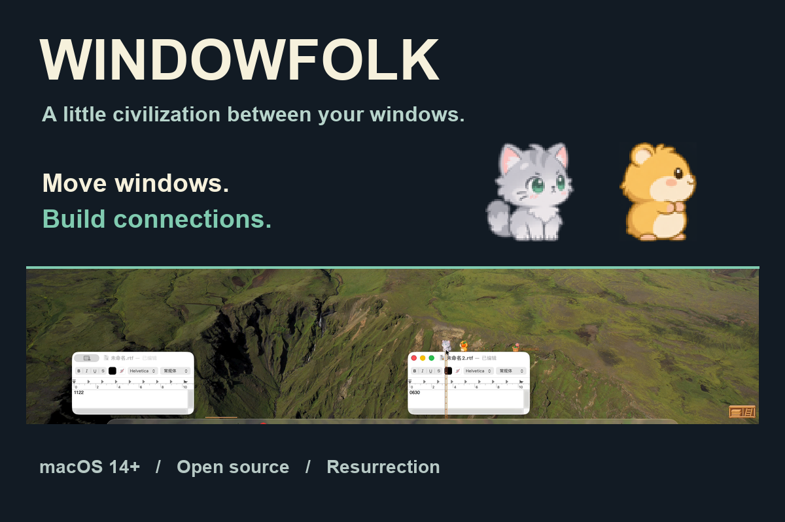

Windowfolk
A little civilization between your windows.
Move real application windows. Build bridges and ladders. Help a silver cat and a golden hamster deliver flowers, visit neighbors, find furniture, and play chase.
v0.2.0 · 3.3 MB ZIP · macOS 14+ · Apple Silicon and Intel · Primary display
No account, credentials, API key, or payment required. This application runs on a Mac, not inside a web browser.

Start the application
- Download the ZIP above and extract it. It contains
Windowfolk.app, all game images, and an MIT license. - Open two ordinary application windows on your main display. Leave their top edges visible and avoid fullscreen.
- Open
Windowfolk.app. Look for a window-shaped icon in the menu bar; the application has no Dock icon. - Drag planks and ladders from the toolbox at the bottom right to connect the windows and floor. The residents move autonomously.
First launch on macOS
This hackathon build is ad-hoc signed and is not Apple-notarized. A downloaded copy may be blocked on first launch.
If you trust this project, attempt to open the app, then use System Settings → Privacy & Security → Open Anyway for this application and confirm Open.
If your Mac policy prevents this, use the source-build option below. Windows, Linux, and mobile devices cannot run this macOS app.
Try all five wishes
The current application interface is Chinese. The translations below identify the commands. Complete English translations cover the menus, settings, diaries, video, and gallery.
| Chinese menu text | English | What to test |
|---|---|---|
| 调试 → 触发心愿 → 送花 | Debug → Trigger wish → Deliver flowers | Build a bridge. During crossing, move its supporting window to observe hanging and falling. Add a ladder for rescue. Planting, blooming, and a fruit return gift complete the loop. |
| 椅子 / 台灯 | Chair / Lamp | Trigger the respective wish, then place the unlocked furniture. Sit on a chair; sleep beside a lamp at night. |
| 去看看 | Visit another window | A flag marks the target. Connect a route to let the resident reach it. |
| 追逐 | Play chase | Watch a chase end in a catch or escape; both count as completion. |
| 调试 → 昼夜 → 白天 / 夜晚 | Debug → Day/night → Day / Night | Switch between lamp sleep and daylight waking. |
| 调试 → 快进 | Debug → Fast-forward | Advance flower growth during a demonstration. |
| 日记 → 写今天的日记 | Diary → Write today's diary | Generate a separate template diary for each resident. English translations are linked above. |
| 退出 | Quit | Save, quit, and reopen to verify persistence. Furniture restores onto the floor. |
Wishes have prerequisites and may not start if another is active. Debug → Reset world (重置世界) erases current progress; use only for disposable test progress. Debug shortcuts trigger the existing simulation. They do not replace normal window interaction.
Source, license, and Kiro evidence
- Public GitHub repository contains source and all 45 game PNGs.
- MIT license, recognized by GitHub.
- Root .kiro directory contains specifications and steering; it is tracked and not ignored.
- English Kiro usage write-up explains the workflow and evidence.
- English installation and testing guide and on-device validation report.
Build from source
Requires macOS 14+ and Xcode or Command Line Tools with Swift 6. The first build downloads package dependencies.
git clone https://github.com/HY-love-sleep/windowfolk.git
cd windowfolk
./build-app.sh
open Windowfolk.appRun swift test to run the automated tests. The November 20 validation passed 754 tests across 178 suites.
Demo scope and privacy
The 2:55 video contains segmented real Mac footage and English explanations. Debug controls trigger wishes, day/night changes, and flower growth; speed changes and omitted waits are labeled. English translations of Chinese text shown in the recording are provided separately.
Optional AI diaries and thoughts are disabled by default and were not used in the video. The core game and template diaries work offline. Windowfolk reads window geometry and owning application names, not window titles or pixels. Normal gameplay needs no Screen Recording or Accessibility permission.
Primary display only. This build has not received complete multi-machine, fullscreen, sleep/wake, or long-duration performance validation.
View the Kiroween submission